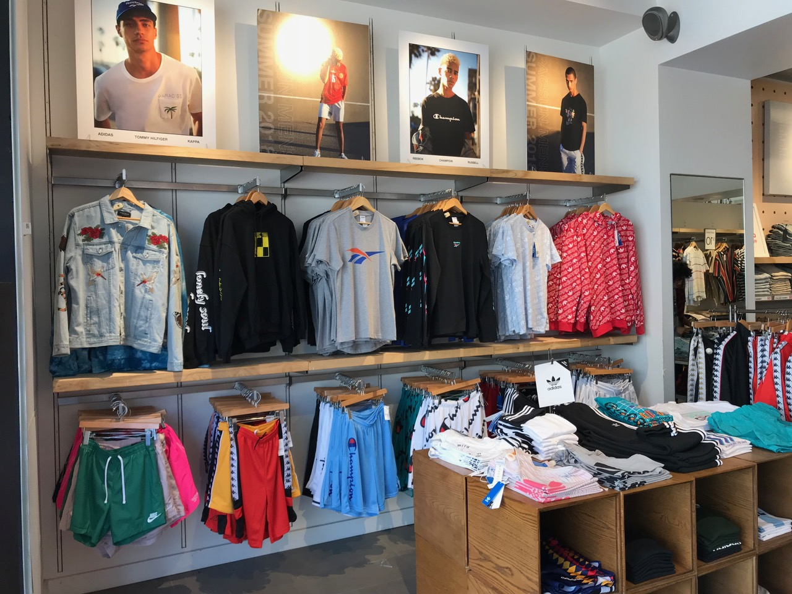
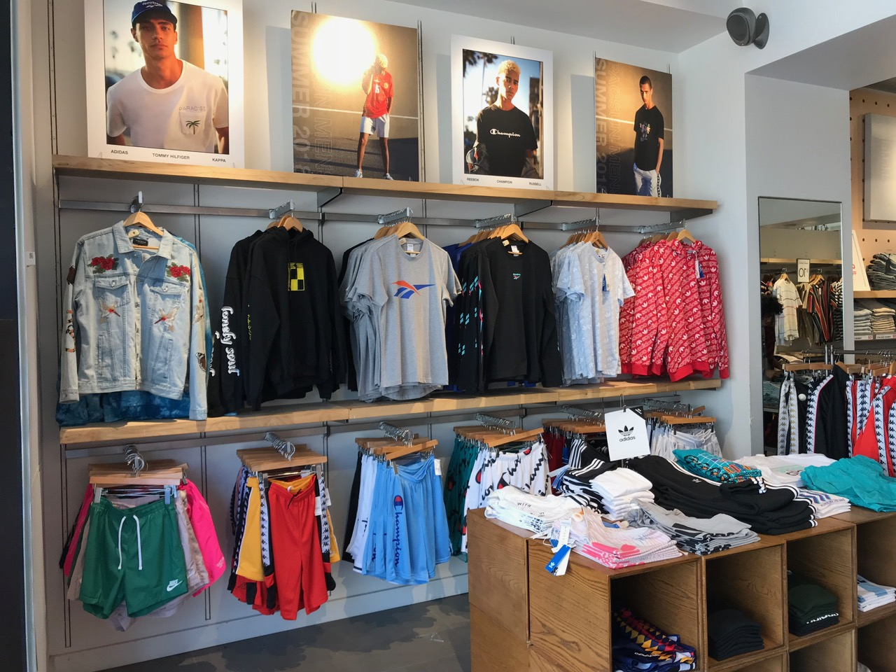

Darren Park
My name is Darren Park, I go to the University of California, Riverside, and I have lived in California my entire life. Born in 1999, I grew up with a loving family that raised me and showed me different paths for my future. As a child, most of my activities were regulated by my parents so I was put in tutoring classes to have a head start of materials that I would not be taught in school yet. I was also tutored by my parents as well. One of the tutoring businesses I was a part of was Kumon and it was a small Korean business that brought in children to teach them Mathematics and English every day after school. I always hated going to this class but as time went by I soon realized that I was far ahead of my class in all subjects. Then, after I come home from Kumon, around 7 pm, I do a review session with my parents to remember what I learned that day. I also took classes to learn how to play the piano, trumpet, and guitar because it made me look more high class to parents. I learned how to play the guitar in elementary school, trumpet in middle school, and piano in high school. Most of my time learning instruments were fun so I enjoyed it. With such a pact schedule I never participated in any other extracurricular activities until I was in middle school. When I was in middle school I took a large interest in sports so I ended up playing for my school soccer and football team. My family was mostly against it because it took up time from my studying but I continued to play for 4 years. Being in soccer and football allowed me to be more social in school and hardworking because nothing is given, only earned. Playing in sports taught me how to be disciplined, confident, and humble to use in my life. Sports became a very important thing in my life for the lessons it taught me. In my family, I am the oldest son so it meant that I had a lot of responsibilities. Since I was the oldest son in the family they required me to be more involved in family matters and put huge expectations on my future. I had to help set up family events, run errands, take care of my elders, and more. I also had a little brother so as the “oldest son” I was expected to take care of him when my parents could not. But I never saw it as a burden so I took him out to eat, drove him to class, helped him with school, and became a guide in his life. My childhood was hectic, but it created a lot of memorable events in my life.
As I grew up I felt a need to gain experience in working environments to really understand how people interacted with one another. Being able to see countless interactions and experiencing them allows me to be better to cater to what others need and exactly how to handle any situation. I have worked at retail stores like Pacsun and H&M which gave me the opportunity to learn about customer interactions and how they knew certain deals or cloth were available. I wanted to determine whether the customers heard news mostly from word-of-mouth, emails, commercials, or any other sources. While I learned about how exactly news goes around I also learned a lot of other skills as well. I learned how to be more organized. During busy hours the stores can get pretty hectic and my hours can go overtime in some cases. Due to this, I learned that in order to balance my work and school more efficiently I needed to start a schedule that will keep me updated with my work and education. Being more organized helps me not miss assignments, study for tests ahead of time, finish tasks for my job on time, and etc. Also, during my time in the retail business, I also learned how to properly interact with certain customers and how to adapt to the customer’s mood as well. I had a small argument with a customer due to their bad manners and it almost cost me my job. So I started to talk to customers more developing a thick skin so I do not get offended as easily and patience for dealing with the entitled customers.
Besides retail stores, I also worked as an intern for my father’s Company called Pacific Liberty Law that handles car accident cases. They are the middleman for the customers and insurance companies and help with legal affairs. As an intern, my responsibility was to lead the customers to the office they needed to go to, handle paperwork, organize files, call insurance companies for updates on our clients, and assist any attorney in the office with whatever they need. Being exposed to the business world with so many professionals showed me what to expect in my future and how to react. I have seen all the good and bad about the business world at such a young age already which gives me more confidence to face them all in my future.
Experience
Intern
• Organized paper work
• Guide customers to their designated attorney
• Called insurance companies to update case files
DECA
• Competed in state competetitions for business
• Conducting online business similations
• Created stock portfolios
• Created and presented business plans in competitions
Education
UC Riverside
University of California Riverside
University of California Riverside
Portfolio



